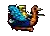

+ 
What the heck is C.S.U.M.E?
C.S.U.M.E (Client Server Universal Machine Emulator)
In short, It's based on older source releases of
and , which allows players to play over a network LAN or the internet, if ping is low and connections are good enough. ;)
C.S.U.M.E. is a branch of UME and was created by: MisterTea.
MisterTea's github: https://github.com/MisterTea/MAMEHubWhile it's ROM support may not be as vast as the current versions of MAME or UME, this emulator has the ability to host a game over the net or LAN, using a TCP/IP Peer to Peer based connection.
From commandline or by means of a client based chat game launcher like MAMEHub.View the Wiki for more info about MAMEHub and CSUME:
GitHub - MisterTea/MAMEHub: Netplay-capable multi-machine emulator===========================================================
Why CSUME in Doom Connector though?
Some time back, I.. Mr.Rocket, took specail interest in CSUME sense it has the ability to play arcade games over the Internet. After some time, I managed to compile the source and test it out, it worked! I was so amazed at the fact that an aracde game could be played now over a network that I figured, why not see how well it would work as a game dll in the Doom Connector as an additional game? So I proceeded to write a mame.dll for DC, and well.. that worked out really well.
Doom Connector is now ready for internet ARCADE GAMEaction!
===========================================================
To make it easier to download CSUME(since otherwise its source would have to be compiled to be used), Doom Connector hosts a precompiled version of CSUME without modification:
Download CSUME for Doom Connector
Note: Requires 7zip to extract..